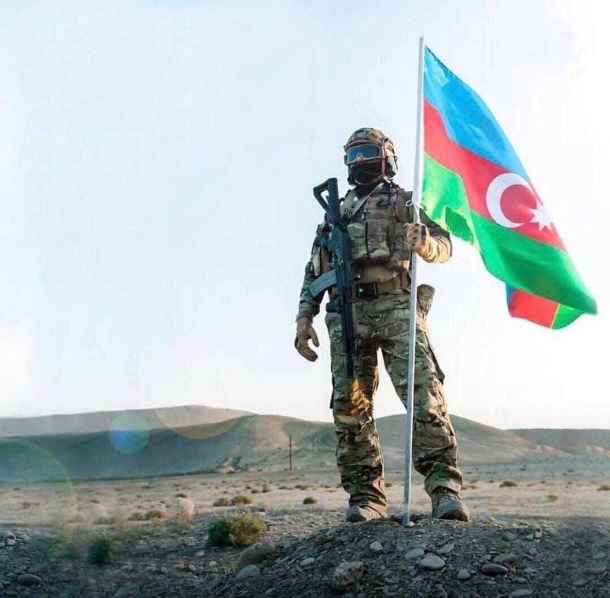
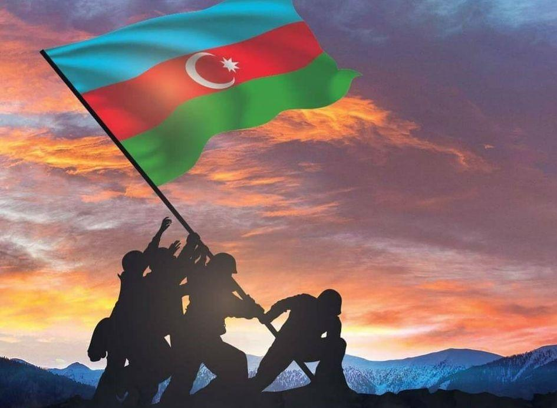

44-дневная Отечественная война (II Карабахская война)
Фарид, [11.04.2023 18:49] 44-дневная Отечественная война (II Карабахская война) В конце 80-х и начале 90-х годов 20 века Армения предъявила открытые территориальные претензии на исторические земли Азербайджана и начала военную агрессию против нашей страны. В то время Армения оккупировала 20% наших земель, используя господствующее в Азербайджане насилие, и в результате проводимой Арменией политики этнической чистки более 1 миллиона азербайджанцев были перемещены со своей родины. длительный переговорный процесс по реализации резолюций № 853, 874 и 884 не дал результатов из-за деструктивной позиции Армении.С 2019 года провокационные заявления и шаги, предпринятые военно-политическим руководством Армении, целенаправленно сорвали переговорный процесс.полностью сломанный. Этим Армения еще раз продемонстрировала, что ее реальная цель – укрепить нынешний статус-кво и аннексировать территории Азербайджана. Принятая Арменией агрессивно-наступательная стратегия национальной безопасности и военная доктрина, расширение политики незаконного заселения на оккупированных территориях, призыв к «новой войне за новые территории», решение о создании «добровольческих отрядов», состоящих из гражданских лиц , 12 июля 2020 года и тот факт, что армяно-азербайджанская госграница подверглась диверсии в направлении Товуз, в то же время войска в целом усилили напряженность на линии соприкосновения, сосредоточили свои войска в районах, близких к линии фронта, и собрал большое количество оружия и боеприпасов, что свидетельствует о том, что Армения готовилась к крупномасштабному наступлению.27 сентября 2020 года Республика Армения, которая в результате очередной военной провокации, совершенной вооруженными силами в очередное грубое нарушение норм международного права, путем применения различных видов оружия, в том числе тяжелой артиллерии, и обстрела жилых районов и военных позиций Азербайджанской Республики, убиты и ранены мирные жители и военнослужащие, национальная безопасность Азербайджанской Республики в В целях предотвращения и нейтрализации реальных и потенциальных военных угроз своей безопасности Вооруженные Силы Азербайджанской Республики начали контрударные операции. Фарид, [11.04.2023 18:49] Согласно Военной доктрине Азербайджанской Республики, в связи с оккупацией части территории Азербайджанской Республики Республикой Армения и ее отказом освободить оккупированные территории в рамках политического урегулирования проблемы, в соответствии с нормами и принципами международного права все необходимые силы, включая военную силу, для восстановления территориальной целостности Азербайджанская Республика оставляет за собой право использовать средства. Как независимое, демократическое, правовое, светское, унитарное государство, способное обеспечить национальные интересы народа и страны, Азербайджанская Республика определяет и осуществляет политику национальной безопасности в целях своего развития. Под председательством Президента Азербайджанской Республики Ильхама Алиева немедленно было проведено заседание Совета Безопасности, на котором были даны конкретные задачи в направлении адекватного ответа агрессору.В целях подготовки территории, а также В качестве Вооруженных Сил и других вооруженных формирований для обороны Указом Президента Азербайджанской Республики от 27 сентября 2020 года на всей территории Азербайджанской Республики с 00:00 часов 28 сентября 2020 года объявлено военное положение. , 28 сентября Распоряжением от 2020 года в Азербайджанской Республике объявлена частичная мобилизация, приняты решения о подготовке к боевым действиям и их проведении. В результате контрнаступательных операций, начатых Вооруженными Силами Азербайджанской Республики с первого дня, от оккупации были освобождены несколько районов Азербайджанской Республики, а также другие стратегически важные территории. С этой целью 29 сентября 2020 года Президент Азербайджанской Республики подписал Указ «Об организации временного специального управления на территориях, освобожденных от оккупации Азербайджанской Республики». На основании указа на освобожденных территориях Азербайджанской Республики в соответствии с административно-территориальным делением Азербайджанской Республики были созданы временные комендатуры, осуществляющие особое управление по каждому району. При временных комендантствах созданы оперативные штабы в составе представителей соответствующих государственных органов (учреждений) и определены их обязанности. Храбрый и победоносный человек, освободивший свою Родину от оккупации Фарид, [11.04.2023 18:54] В результате операций, явившихся результатом желтого влияния нашей храброй и победоносной Армии, освободившей Родину от оккупации, было уничтожено производство боевого оружия, восстановлена техника с живой силой и укреплённым с полей сражений вооружением. целевые объекты гражданской инфраструктуры, принадлежащие городам и районам - жилые дома, больницы, медпункты, здания школ, детских садов, административные здания государственных учреждений, сельхозпредприятия, а также совершившие правозащитные и военные преступления путем обстрела из различных видов оружия, в том числе артиллерийского и баллистических ракет, зверски убивали мирных жителей, причиняли крупный ущерб гражданскому имуществу, государственному имуществу, дополнительным объектам инфраструктуры, хозяйствующим субъектам. Таким образом, второй по величине город Азербайджана, стратегические объекты в районе старой Гянджи с историко-культурными объектами и бывшими городами Мечевир (ГЭС) и Евлах (нефтепровод Баку-Тбилиси-Джейхан), Бейлаган, Барда, Тертер, Габалинский, Геранбойский, Агджабединский, Абшеронский, Хызинский и другие районы подверглись обстрелу из баллистических ракет и других средств тяжелой артиллерии. 27 сентября 2020 года в 18:00 в селе Гашалты-Гарагоюнлу города Нафталан обнаружено нападение некой семьи (5 человек) на дом жителя села Гурбанов Эльбрус Иса оглы. 04, 05, 08, 11 и 17 октября в результате ракетных обстрелов и обстрелов тяжелой артиллерии в городе Гянджа погибло 26 человек, ранено 175 человек, нанесен большой ущерб объектам гражданской инфраструктуры и автотранспорту города. В результате обстрелов вооруженных сил Армении 29 человек погибли, 112 человек получили ранения, в регионе в большом количестве повреждены объекты гражданской инфраструктуры и техника. Фарид, [11.04.2023 18:55] В целом в результате военной агрессии Армении погибло 93 мирных жителя, в том числе 12 детей и 27 женщин, 454 мирных жителя получили ранения, всего повреждено 13 360 жилых и нежилых помещений, 346 транспортных средств, 1018 фермерских хозяйств. .
 